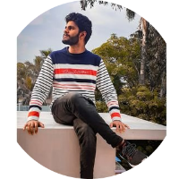

|  | ANTILIN STANIS S RA motivated individual with knowledge of languages ,seeking a position in a growth-oriented company where I can use my skills to the advantage of the company while having the scope to develop my own skills |
| Education | Institutions | CGPA |
|---|---|---|
| SSLC | Seventhday adventist matriculation Higher secondary school | 9.4 |
| HSC | Seventhday adventist matriculation Higher secondary school | 7.3 |
| Bachelor of Engineering | St.Xavier's Catholic College of Engineering | 8.1 |
| JAVA | ⭐⭐⭐⭐ | HTML | ⭐⭐⭐ |
| CSS | ⭐⭐ | JAVASCRIPT | ⭐⭐ |
Rendered social service from 2019-2020 to 2020-2021 as NSSvolunteer and attended NSS special camp from 13/01/2020 to19/01/2020
Inplant training at Tuticorin Thermal power station,Tuticorinfrom 01/08/2022 to 05/08/2022
The purpose of the project is to monitor and control the level of thewater tank